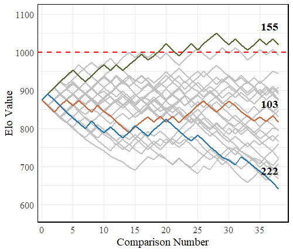
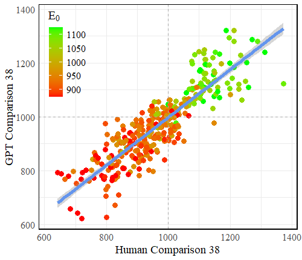

(2025-02-26) New paper to appear in CHI2025 Late-Breaking Work.
Can LLMs be used to quantify the emotional salience of text statements using an Elo rating system?
Kimberley Beaumont, Martin Oravec, Harry Emerson, Ian Penton-Voak and Conor Houghton
psyarxiv/qsn4b
Over the last few years as part of a number of experiments involving an effort for reward task we have asked a over a thousand participants Is an event or experience (either positive or negative) significantly affecting your mood right now? and if they said yes, we asked them, if they were willing, to write down what that event was and to rate how negative or positive the event was using a slider on a scale of zero to 100.
We ended up with a large collection of events, after cleaning, 363 in all. The most positive were very positive, with one reporting mindblowing sex and another a marraige proposal; the most negative are awful. Ultimately one of things we are interested in is the difference between short and long term mood or affective state and, in addition to the events and the actual task, we have mood questionaire date for questionaires aimed at short and long term mood. To relate the effect to mood we need a numerical quantification for how negative or positive the events are. Of course, we do have the participants' own rating, but that may reflect their mood, how do they interpret the event, rather than the degree to which the event they mention is actually negative or positive.
To get a score for the events we decided to use an Elo system. We recruited another set of online participant and asked them to compare pairs of statements and say which was the more negative, or more positive; the question varied. Out of these pairwise comparisons we created a score using the Elo system designed for chess. The graph below shows how the score changes as comparisons are made; some events go up, some stay the same, some go down. The initial score is scaled but is determined by the original rating supplied by the participant reporting the event and in this graph we use only events that start at the same user determined score. Nonetheless, the comparisons lead to them diverging.

In the way, we now have quantitative scores for the individual events and we are now examinging the relationship between these scores and the results of the mood questionaires. This is on-going. However, in the meantime we were curious as to whether LLMs would perform well on this task; if they performed the comparisons would they give a similar set of scores to the humans. This is interesting in two ways, first, recruiting participants to do the comparisons is slow and expensive, if LLMs are equally good at the task, this could make it easier to use Elo rankings to score the emotional valence and salience of text statements. Second, it is interesting to see how well an LLM can assess these statements since success would indicate that the LLMs can enact a simulation of what might be called emotional intelligence.
Of course, it turns out the LLMs are extremely good at this task, the graph below plots the result of human rating and rating by GPT-3.5-Turbo; with the points colored according to the original score, determined by the self-reported score.

This is impressive and useful! There are more details in the paper and a link to the data itself, including the 363 statements.